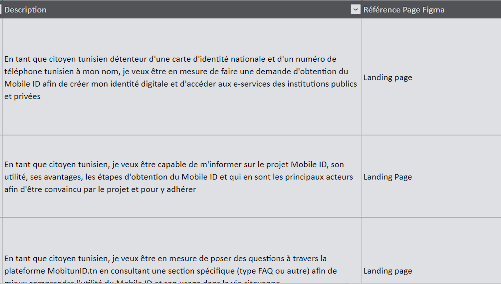
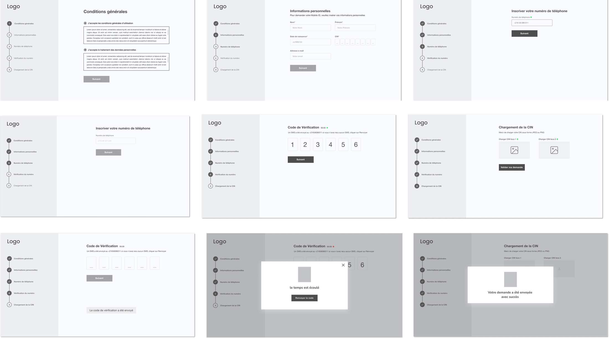

Case Study — Digital Identity · E-Government
Mobile ID
(e-Houwiya) —
Tunisia's Digital
Identity Backbone
I designed the user experience for Tunisia's foundational digital identity platform — from design thinking workshops and customer journey maps through wireframes, service blueprint, and final UI screens. The system enables citizens to verify identity, sign documents, and access government services entirely online.
National Digital Strategy
Key pillar of Tunisia's Digital Transformation Roadmap 2025 · 200,000 subscribers as of March 2025
Launched August 2, 2022 · Now open to banking sector for financial inclusion · Tunisia postage stamp issued 2026
01 — The Problem
No unified digital identity —
citizens had to visit offices in person
Tunisia was undergoing digital transformation, but a fundamental piece was missing: citizens had no secure, reliable way to verify their identity online. Every administrative procedure — renewing a document, submitting a request, accessing banking services — required a physical visit to a government office during business hours.
Paper-based verification was slow and inefficient. Security and fraud risks were high. Digital services could not scale without identity validation. The country's National Digital Strategy 2021–2025 identified a unified digital identity as the critical foundation that all other e-government services depended on.
02 — The Solution
A mobile-based digital identity
for all Tunisians
Mobile ID (e-Houwiya) allows Tunisian citizens — aged 18 or over, holding a national identity card — to obtain a digital identity linked to their unique identifier. The mobile ID enables reliable online authentication, electronic signatures with full legal validity, administrative procedures, and retrieval of official documents — 24 hours a day, from anywhere, without visiting an administration office.
The verification process takes 3–5 minutes: citizens verify their identity using their CNI (national ID card) number and phone number. The system connects to the civil registry database, verifies the phone number with the telecom operator, and issues a digital identity linked to the citizen's device.
03 — My Contributions
Full-spectrum UX work
across 4 months
Discovery
Design Thinking Workshops
Facilitated strategic vision alignment workshops and business model alignment workshops with Ministry stakeholders. Challenged the proposed macro flow and defined service boundaries before any design work began.
Research
Personas & Competitor Analysis
Developed user personas for the primary release (Tunisian citizen with CIN and active phone number from Orange, Ooredoo, Tunisie Télécom, or MVNO). Conducted in-depth benchmarking of comparable digital identity systems using Miro.
Mapping
Customer Journey Maps
Created detailed CJMs for 4 use cases — covering identity registration, recovery, elderly-assisted access, and SIM reactivation. Mapped every touchpoint, emotion, and friction point in each journey.
Architecture
Service Blueprint
Collaborated on a comprehensive service blueprint mapping the citizen's frontstage journey to backstage processes — operator verification, civil registry database queries, OTP flows, and the central portability database.
04 — Personas & Stakeholders
Who we designed for —
actors and end-users
We mapped two distinct groups: the project stakeholders (TCM, Ministry of Health, CIMS, GIZ) and the end-user players of the Mobile ID platform. For the first release, the primary persona was defined as a Tunisian citizen (major) with a CIN and an active phone number from Orange, Ooredoo, Tunisie Télécom, or MVNO — residing in Tunisia with the capacity to create an account and apply for an e-certificate.

User Personas — Tunisian citizens (CIN/non-CIN), foreign citizens, children, and elderly users

Stakeholder & End-User Map — the actors in the project vs. the end-users of the platform
05 — Benchmarking
Studying existing
digital identity systems
I conducted in-depth benchmarking of comparable digital identity systems worldwide — mapping features, user flows, and accessibility standards. The research was structured in Miro and covered registration flows, verification methods, service catalogues, and security patterns across multiple countries' digital ID implementations.

Competitor Benchmarking — structured analysis of international digital identity platforms in Miro
06 — Customer Journey Maps
Mapping the full
identity journey
I created detailed customer journey maps for each of the 4 use cases mapping awareness, consideration, registration, verification, and ongoing service access. Each CJM captured touchpoints, user emotions, pain points, and opportunities for design intervention at every stage.

Customer Journey Maps — registration, recovery, elderly-assisted access, and SIM reactivation flows
07 — 4 Use Cases Designed
Real scenarios that
shaped every flow
Use Case 1
Changed phone number
"I have a Mobile ID but I changed my phone number." Designed a flow to reset the phone number linked to the digital identity — requiring identity re-verification through the civil registry to prevent fraud.
Use Case 2
Lost digital identifier
"I lost my digital identifier but have my PIN." Designed a recovery flow to restore access to online services — involving OTP verification, ID card re-scan, and credential restoration.
Elderly citizen — not digitalized
"I am an elderly person and I am not digitalized." This use case required designing for a citizen who needs family member assistance to complete identity registration — proving that the platform works for everyone, not just the digitally literate.
Use Case 4
Deactivated SIM card
"My SIM card has been deactivated and I can no longer receive OTPs." Designed a reactivation flow — citizen accesses their account via Mobile ID's web interface, clicks "Reactivate my SIM card," and follows the operator-defined procedure to restore OTP capability.
08 — Service Blueprint
Mapping frontstage
to backstage
One of my key deliverables was a service blueprint mapping the citizen's visible journey to the invisible backend systems. The architecture connects the citizen to IUC (identity verification), the Backend Mobile ID system, mobile telephone operators (for OTP verification), the CNI database (civil registry), and the central portability database.
The full verification flow has 12 steps:
- Enter ID card number and date of birth on mobile-id.tn
- Verify data against the civil registry database
- Retrieve the citizen's first and last name
- Enter the phone number and check portability
- Verify the number with the telecom operator
- Send OTP to citizen and verify on mobile-id.tn
- Upload ID card photos and verify citizen data
- Generate the Digital ID and send SMS confirmation

Service Blueprint — mapping citizen journey to civil registry, operator verification, and portability systems
09 — Backlog & Sprints
Prioritized features
and sprint delivery
The backlog contained all user stories related to the citizen's journey on mobile-id.tn — structured by priority and mapped to sprint deliveries. Each story was defined with acceptance criteria, linked to the relevant persona and use case, and tracked through the sprint cycle.

Product Backlog — prioritized user stories mapped to sprint delivery cycles
10 — Wireframes & High-Fidelity Design
From structure
to final screens
I progressed from low-fidelity wireframes to high-fidelity UI screens — iterating with stakeholders at each stage. The final designs covered the complete registration flow, identity verification, document signing, and government service catalogue access.

Wireframes — core registration and verification flows before visual design

High-Fidelity UI — final screens for identity registration, document signing, and service access
11 — Reflection
Designing foundational
infrastructure
Mobile ID was where I understood what it means to design a building block. We weren't designing an app — we were designing the layer that every future e-government service would depend on. That changes how you think. Every decision had to be robust enough to survive being the foundation for services built by different teams over the next decade.
The service blueprint exercise was the most valuable thing I did on this project. It forced everyone in the room — designers, engineers, ministry officials, telecom operators — to see the same picture at the same time. That shared visibility unlocked decisions that had been blocked for months.
Use Case 3 — the elderly citizen — reminded me that inclusive design isn't a checklist item. It's a philosophy that has to start at the problem statement. If you wait until the end to "make it accessible," you'll fail the people who needed you from the beginning. Designing delegation patterns into the core flow — not as an afterthought — was the right decision.